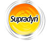
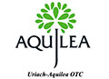
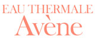
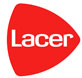
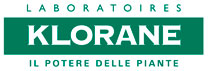

Parafarmacia
Nuestra oferta en parafarmacia pretende, más que la dispensación de los diferentes productos, proporcionar asesoramiento adaptándonos a las necesidades de cada paciente. Intentamos cubrir un amplio abanico de áreas como: dermofarmacia (que incluyen tanto la dermoestética como el tratamiento de problemas específicos de la piel o cuero cabelludo), nutrición infantil, protección solar, fitoterapia, dietética, higiene corporal y bucondental, óptica, ortopedia... Nuestro objetivo es ofrecerte en todo momento un servicio integral y completo.
Desde el siguiente menú puedes seleccionar y explorar nuestras diferentes secciones:
Nutrición Infantil
La lactancia materna es la mejor alimentación para tu bebé. La alimentación de la madre en el embarazo y también durante la lactancia juega un papel fundamental en ese desarrollo. La nueva generación de leches infantiles recoge todos los avances tecnológicos en este campo elaborando fórmulas cada vez más similares a la leche materna cuando ésta ha de ser sustituida.
Nuesta oferta abarca desde preparados nutricionales (con una amplia gama de leches maternizadas y cereales que contribuyen al desarrollo gastrointestinal del bebé), suplementos nutricionales, probióticos, soluciones de hidratación, etc. hasta productos de biberonería con todas las garantías de seguridad para el cuidado e higiene de tu bebe. Queremos asesorarte y acompañarte en la maravillosa tarea de ser padre.
Estas son algunas de nuestras marcas:
Dietética
Los avances en el campo de la nutrición han ayudado a comprender el importante papel de la alimentación en la salud. Es conocido el hecho de que una dieta sana y equilibrada nos proporciona los nutrientes necesarios para un correcto funcionamiento de nuestro organismo. Actulmente sabemos mucho más acerca de cómo diversos nutrientes nos ayudan a prevenir determinadas enfermedades.
Es la era de los nutracéuticos: prebióticos, probióticos, Omega 3, suplementos vitamínicos y minerales, nutrición artificial orientada a la malnutrición, a la obesidad, contra en envejecimiento... En definitiva, un campo que nos apasiona y en el queremos ofrecerte los últimos avances.
Algunos de los laboratorios con los que trabajamos son:
- 
- 

Dermofarmacia
Dicen los expertos que nuestra piel tiene memoria, y es cierto. Hoy estamos perfectamente sensibilizados sobre los efectos nocivos de la exposición solar y cada vez nos protegemos más frente a ésta. Sin embargo, otros factores ambientales hacen que la aparición de dermatitis o alergias aumente día a día.
La lucha contra el envejecimiento está de moda. Pero, al margen del interés estético, cuidar nuestra piel (con ayuda de la dermocosmética o la nutricosmética) permite que nos sintamos mejor física y emocionalmente y no cabe duda de que cada vez más constituye un aspecto primordial en el cuidado de la salud.
Disponemos de marcas de prestigio tanto en el campo del tratamiento de problemas de salud dermatológicos como en dermoestética para un cuidado personal integral. Algunas de ellas son:
- 
Higiene y salud bucodental
La higiene personal es el concepto básico del aseo, de la limpieza y del cuidado del cuerpo humano. Sus objetivos son mejorar la salud, conservarla y prevenir las enfermedades o infecciones. Una deficiente higiene bucodental puede conducir a la aparición de problemas y enfermedades odonto-estomatológicas dentales y periodentales. El mejor modo de prevenirlos es con una buena higiene bucodental y con revisiones periódicas al odontólogo o estomatólogo. También es fundamental el control de la ingesta de determinados alimentos, especialmente aquellos implicados en la aparición de caries, tales como los azúcares.
Una buena higiene bucodental debería establecerse mediante la adopción de 4 hábitos:
- El cepillado
- La limpieza con hilo dental
- El enjuague
- Visita periódica al dentista
Estos son algunos de los productos de higiene que podemos ofrecerte:
- 
- 